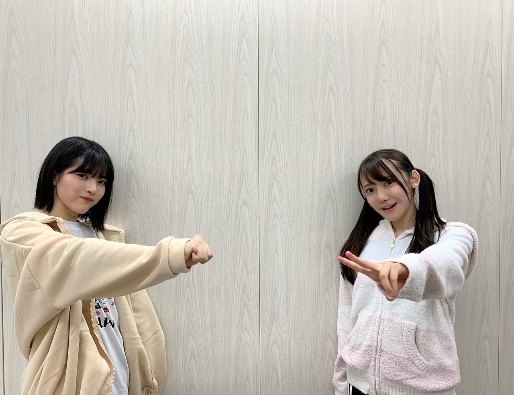

2020/1205Satお疲れ様です。楽しみいっぱいな林瑠奈です。
本日もお疲れ様です。
遅くなり申し訳ありません。
乃木坂46、4期生の林瑠奈です。
華咲くセブンのティーンの林瑠奈です。
負けるなしょげるな林瑠奈、今日も1日頑張るな
(ピンポーン)
45周目となりました、ブログリレー。
何度同じことをするんだと思われるかもしれません。
ブログ、書いたのに消えました。
でもね、前回と違うことがありまして
今回はなんとなく「あー消えてそうやな」って思ってたんですよ。
マーフィーの法則を実感した瞬間でした。
本当に気をつけます。
♪:*:･･:*:･･:*:･･:*:･･:*:･･:*:♪:*:･･:*:･･:*:･･:*:･･:*:･
火曜日、くろみちゃんと共にのぎおびを担当させていただきました。
見てくださった方、ありがとうございます。
普段からあんな風に雑な関係なのですが、驚かれた方もいましたでしょうか。
私としましては、もっとくろみちゃんの良さを引き出したかったなというのが正直な思いであります。
また2人で何かやらさせていただくことがありましたら、もっとエンジンかけますのでよろしくお願いします！

倍数コンビ。
♪:*:･･:*:･･:*:･･:*:･･:*:･･:*:♪:*:･･:*:･･:*:･･:*:･･:*:･
レコメン！乃木坂四期生メガ盛り祭り
12月7日（月）：掛橋、黒見、璃果
12月8日（火）：筒井、林、矢久保
12月9日（水）：柴田、清宮、松尾
のメンバーが出演致します。
いつも拝聴しているレコメン！さんに出させていただけるということで、本当に嬉しさ全開です。
ありがとうございます。
是非聴いていただけたらと。
26thシングル、『僕は僕を好きになる』
オンラインミート＆グリート（個別トーク会）の開催が発表されました。
【日程】
（１）1月31日（日）
（２）2月7日（日）
（３）2月14日（日）
（４）2月27日（土）
（５）3月14日（日）
（６）3月21日（日）
第2次受付
2020年12月10日（木）14:00～2020年12月11日（金）14:00まで
https://www.nogizaka46.com/smph/news/2020/12/-4626th.php
上記の日程で開催させて頂きます。
今から緊張が絶えませんが、是非応募していただけると幸いです。
なんだか、お知らせすることが多くて嬉しいです。
♪:*:･･:*:･･:*:･･:*:･･:*:･･:*:♪:*:･･:*:･･:*:･･:*:･･:*:･
M-1グランプリ2020のファイナリストが決まりましたね。
前回大会に引き続き
見取り図さん
ニューヨークさん
御二組も決勝進出ということで、わたしはテンションが上がりに上がっております！
2018年大会を引き金に好きになった見取り図さん。
当時は決勝初出場だった御二人が、
『決勝常連！』と言われていること。
"エモい"という言葉の使い所はここにあったのか、というほどエモいです。
18〜19年大会の間に、リリーさんの髪型がお洒落になっていると感じたのは、わたしだけでしょうか。
今年はどんな装いなのかも含めとても楽しみです！！
そして、ニューヨークさん！
わたしが色々な場で好きと言わせていただいている御二方。
さらばさんとお話しするときは、必ずと言っていいほどニューヨークさんの話になります。
わたしがニューヨークさんを好きだからというのもあるんですけど、
森田さんのニューヨークさん愛が凄いんですよ。
なんやかんや言うて好きやでスタイル。
キングオブコント2020も準優勝をとられたということなので、M-1グランプリでのご活躍も楽しみです。
人生の楽しみがまた一つ増えました。
♪:*:･･:*:･･:*:･･:*:･･:*:･･:*:♪:*:･･:*:･･:*:･･:*:･･:*:･
4期生ライブまで残すところあと1日となりました。
とにかく全力、全力の中の全力で頑張りますので何卒宜しくお願い致します！！
色々と話したいことは沢山ありますが、そちらはライブが終わってからということで。
明日はミュウちゃんです。
前よりもっともっと仲良くなったね。
明日もよろしく！頑張ろう！！
アディオス！！！！！！！
P.S.さやたんとさやかにやっとお誕生日渡せました
かしこ
コメント(213)
楽しみにしてる！
久々に運動して体がボロボロのりょうたです。
いよいよあと4期ライブまであと1日となったね。少し前にのぎおびを見ました。安定のトークというか様になってきたなと思いますね。配信されてくたびに。徐々に慣れてきて喋りも流暢になってきてこれはソロ曲期待してますね。
ただあなたのソロ曲が気になって配信をあまり熟視できてなかったかなぁと思いますね。
コメント見ててネタみたいなこと言ってたけどまぁそんなことはまず持ってないと思ってますし、でも少しだけそうなのかなぁと変な期待だけしとくわ。なんの意味もないけどネタって言ってた人たちの期待に少し乗っかって。まぁそんなことはどうでもいいとして頑張ってやってもらえればいいと思いますね。
一応僕もるなぴのソロを予想してみました。おそらくブログコメントを見るのが4期ライブ後やと思うからなんとも言えんけど
一応３つ候補あって、ごめんねずっと、強がる蕾、硬い殻この辺かなぁって思ってる。
まぁあってはないと思うけど4期ラで答え合わせといこうかね。
まぁるなぴ推しということで1番楽しみにしてますからね。楽しんで歌ってもらえればいいかなぁって
話は変わって26枚目シングルのミーグリが来ましたね。この期間まずは有意義なものにしてもらっていただけたらいいんじゃないかなぁって思いますね。一度はあなたと会話したいのでどっかのタイミングでミーグリ応募しようと思います。
連載スタートするね。それも楽しみにしてる
よ。
させていただきますという言葉が時に相応しくないということはじめて知りました。
偉い人や上司の人に使う言葉ではありますが僕らがそれを普通に使ってはいましたが
させてください、します。
まぁ使うこともありますが基本させていただきますというかもしれない。今後その辺も気にしてやってみようと思います。
ひとつ勉強になった！！
自己紹介のやつ見たけどるなぴ身長でかいね。自分とそんな変わらないなぁと思いましたね…まぁただ単に僕が小さいだけなんだけど…自分で言ってて悲しくなってくるよね。
長文失礼しました。終わります。
じゃあまた アデュー
ミーグリ参加するよ〜！楽しみです！その前に4期生ライブぶちかましてくだせぇ！全力で応援します！
あでぃおすすすす
ミッフィーちゃん！アディオス！
遅くなったけど起きてて良かった！笑
明日のライブむちゃくちゃ楽しみにしてるからね！
ソロとかも期待してる！！
負けるな！しょげるな！林瑠奈！4期生ライブ頑張るな！
頑張ってね！！！
また5日後のブログ更新待ってまーす！！
明日がライブということでめちゃくちゃ大変な中の更新本当にありがとう！
のぎおびでるなぴのソロが発表になってからもう本当に本当に楽しみにしてるしすごく期待してるしるなぴが全力を出せることを本当に祈ってるよ！
ニッカンスポーツの連載も始まったし来週はレコメンもあるしるなぴの関わるコンテンツが増えるたびにすごく嬉しく思うよ！
ミーグリ、応募したから会えるのが楽しみ！画面越しだけど研修生ツアー以来の対面イベントだからドキドキしてる！
やっとここまで来たんだなっていう感慨深さがすごいや笑
お知らせがたくさんあるとお互いに嬉しい気持ちになるね！
4期生ライブ、頑張ってね！
次のブログでの感想も楽しみにしてるね〜！
ミーグリ1次取った！早く話したいなー(^-^)
明日の4期生ライブめちゃくちゃ楽しみ！！
最近寒くなってきたから体調にも気をつけて頑張ってほしい(^-^)
黒見ちゃんとのSHOWROOMもなかなかシュールだったから色んなメンバーと絡むはやしさんがもっとみたくなった！
12/8自分の誕生日だけどレコメンではやしさんの声聞けるのか〜楽しみたくさんだな、、
4期生ライブ楽しみだああ
パフォーマンス頑張ってね〜
ミーグリ当たったからまたハヤシルーと呼ばせてもらいます笑
ニューヨークの話しましょう笑
冷静〜〜〜♪
遅くてもいいよ、最近すごく忙しいからね(｡>﹏<｡)
ってブログ消えたか？(｡>﹏<｡)辛いなあ
マーフィー法則って何？さり気なくまた頭いい発言ダナ（笑）
のぎおびすごく楽しかったよ
頭いいるなぴと天然なくろみ
トゥエルブ、いいコンビだな＼(^o^)／
そしてレコメンめちゃ楽しみ
早くるなぴーとお笑い芸人のラジオレギュラ来ないかな(｡>﹏<｡)
ライブ頑張って(/･ω･)/すごく楽しみ＼(^o^)／
これからも頑張って(/･ω･)/
ブログ更新ありがとうございます。
くろみんとの「のぎおび」、おつかれさまでした。そして「倍数コンビ」としてのユニット誕生、これは新４期同士、楽しみですね。
そして来週は、「レコメン」での４期生メガ盛り祭り、こちらも楽しみです。
でも、何といっても、最大の楽しみは明日のライブ、配信が今から待ち遠しい限りです。
しっかりと目に焼き付けておきたいと思いますので、力の限り全力で突っ走っていってください。画面の前で応援しております。
今日は、はやしのブログ更新の日なのにもう日付変わっちゃったな〜って思ってたら、なかなかの深夜に更新されたよ〜焦った焦った(笑)
ブログに書く内容消えないように気をつけてくだされぇ笑
今2回このミスやってる気がするから、次は3回目で二度あることは三度あると三度目の正直が拮抗してるところだからほんと気をつけて(笑)
もはや、LINEのkeepメモに書く内容とりあえずあらかた打ち込んでおいてブログ更新するときにコピペするとかでいいんじゃないかとも思うよ笑、おつかれだと思うけどお気をつけて(笑)
ーーーーーーーーーー
884ちゃんと963ちゃんののぎおび観ましたよ〜
黒見ちゃんが間違えて言っちゃった「#の、ぎおび」がはやしのツボすぎてこっちも笑ってたよ、笑
そんなに笑うところじゃないでしょって思ってたんだけどね(笑)
あと、はやしの「黒見ちゃんはバカなんですよ〜笑」的なことを言ってたのも笑ったよ笑。少し想像はついてたけどそこまでストレートに言うとは思わなかった笑
ーーーーーーーーーー
ついに日付変わって今日4期生ライブだね！！！
はやしは唯一ソロで歌うってなってたからすごく楽しみ！
どの曲歌うんだろうな〜楽しみだな〜はやしるな〜
(自分でもつまらなかったですごめんなさい笑)
新しい4期生楽曲も含めて、ライブがんばってね！！
次回のブログも楽しみにしてるな！レコメン！も楽しみにしてるな！(´∀`)
ミッフィーちゃ〜ん(・×・)
初めましてです！
今日の4期生LIVEめちゃくちゃ楽しみにしてます！
るなちゃんもライブを楽しんでください！
瑠奈ちゃん本当に可愛いです！！
4期生ライブ頑張ってください！
自分も野球頑張ります！
・
・
好きな球団はどこですか！？
ファイト！
大好きだよ！
長い期間での目標も大事だと思うけど、それと共に毎日その日の目標を設定するべきだろうなと思ったりしてる。
いよいよ4期生ライブですね
今から楽しみすぎてヤバいです！
全力で応援してます！ピンク振ってまーす♪
ミーグリ！？取ってみたいです！
ps.M1楽しみね！でも、今週はラーメンズのコバケンさんが現役引退されたのがとても寂しいお笑い事情でした。。。
眠すぎまぁーすテスト嫌でぇす本当に本当に嫌でぇす、テストのせいで4期生ライブ親に止められて見れないんでぇぁす本当にテストどっか飛んでいけぇー！って感じですねぇはぁい笑笑
.:*:・'°☆.:*:・'°☆.:*:・'°☆.:*:・'°☆
私、今まで林瑠奈のこと林瑠奈って呼ぶのを貫いてきたんですけど、るなぴって呼ばれてるじゃないですかー？だから私はるなっぴってよんめいいですかぁー？承認よろしくおねがいしまぁす！
.:*:・'°☆.:*:・'°☆.:*:・'°☆.:*:・'°☆
林瑠奈はライブ！私はテストｫｫｫｫｫｫ
お互い頑張りましょー！
まじ、体調にだけは気をつけてお仕事頑張ってください！！！
これからも応援してます！
はづきより
忙しい中ブログ更新ありがとうございます！
瑠奈ちゃんのブログはすごい引き込まれる文章でいつも楽しく拝見させてもらってます。
質問なのですが、林ちゃんは森に改名する事はないのですか？
くろみんとの倍数コンビでの『のぎおび』最高でした
いよいよ4期生ライブ本番当日ですね
るなぴのソロコーナーもあるとか
有人ライブだと決まった人数しかライブを見れないけど、配信による無観客ライブだから普段は会場が遠くてライブを観に行けないファンもみんな応援してるからライブ楽しんでね
『質問』
るなぴの今年一番のニュースは何ですか？
るなぴは寝相良い？
いつもどんな体制で寝てますか？
一本グランプリ出てほしい
失礼しました…
明日ライブで緊張してるであろう時にブログに時間かかって大変やったんやねぇぐっすり寝てな！
雑すぎてびっくりした！笑くろみんの前やと割と年上のお姉さんみたいな感じなんですね！その通りなんですけど！笑
基本誰かの良さを引き出そうとするスタイルめっちゃ良い笑
白っぽい色の服着ると髪の黒さでクールに見えるな！かわいい！！
ラジオ聞くわ！んでミーグリ1/31に1〜3部当選したから行きます！
個握初参加でわけわかってないけどよろしくお願いします笑
たしかにお知らせ新鮮やな！
調べたらリリーさんの変わり具合えぐいな笑2組とも癖スゴグランプリ面白かったな最近！
乃木神社のはやしの絵馬の写真がTwitterで流れてきて
そこまでの目標掲げてたんか！！と思って覚悟もすごそうやしビックリしてもっと応援したくなったよ！！
アディオス！！！！！！！
P.S. ライブ楽しんでね！！！
かしこ
深夜にこんばんは、お寒うございます。
そういえばミーグリの受付も始まりましたね、どこかでお邪魔することになると思います。
楽しいブログがようやく読めたけど、明日のライブ中に寝落ちしないようにもう寝るね。884さんのタオル、手元に用意しとくから。では、画面越しに会おう！！
明日は全力で応援させて頂きます(∩´∀｀)∩
ではは
全力で眠らせて頂きます(。-ω-)zzz
4期生ライブ楽しみです！
新曲とかも楽しみなんだけど、瑠奈ちゃんのソロを1番楽しみにしてます！
いい一日になりますように。
対面での握手会が再開されたら是非お話ししに行きたいと思ってます！
ニューヨークさん、M-1とってほしいですね！以前水ダウで森田さんと屋敷さんとBKBさんの仲良い3人が一緒に検証ロケしてて面白かったですね笑
とにかく、今日はがんばってね〜
アディオス！！
ひょっとして初めてのＰＡＳＳかと
心配しておりました。
いよいよ本日４期生ライブ
林ソロ！！！
何歌うんでしょうか？
ワクワク！！
頑張って楽しんでください。
日曜夕方
早めに晩ごはんの準備をして
こちらも楽しみます。
負けるな！しょげるな！乗り遅れるな！
瑠奈ちゃんと同じ高校2年生の愛知の覇王です！
さくらちゃんとあやめちゃんと楓さんと同じ愛知県出身だよ！
いよいよ明日、4期生ライブだね！
瑠奈ちゃんが明日、ソロで歌う曲、めっちゃ楽しみだよ！
頑張ってね！
体調を崩さないように気をつけてね！
応援してます！
明日ライブで緊張してるであろう時にブログに時間かかって大変やったんやねぇぐっすり寝てな！
雑すぎてびっくりした！笑くろみんの前やと割と年上のお姉さんみたいな感じなんですね！その通りなんですけど！笑
基本誰かの良さを引き出そうとするスタイルめっちゃ良い笑
白っぽい色の服着ると髪の黒さでクールに見えるな！かわいい！！
ラジオ聞くわ！んでミーグリ1/31に1〜3部当選したから行きます！
個握初参加でわけわかってないけどよろしくお願いします笑
たしかにお知らせ新鮮やな！
調べたらリリーさんの変わり具合えぐいな笑2組とも癖スゴグランプリ面白かったな最近！
乃木神社のはやしの絵馬の写真がTwitterで流れてきて
そこまでの目標掲げてたんか！！と思って覚悟もすごそうやしビックリしてもっと応援したくなったよ！！
アディオス！！！！！！！
P.S. ライブ楽しんでね！！！
かしこ
本当に毎回面白くて楽しいよ^_^
るなぴのミーグリ応募して当選しました^_^！
ずっと応援してたから遂に、、！！って感じで
本当に嬉しい、、（ ｉ _ ｉ ）
4期ライブも楽しみにしてるね。おやすみ！！
遅いよ！笑
いやいや、ウソやで。
ライブ前日の大変な日にブログの日が回ってきて、本当にお疲れ様。
サクッと書いて更新したかっただろうに、そんな日に限って書いたやつ消えたか。。笑
るなぴは悪くない！
るなぴの携帯が悪いねん。
書き直したのにしっかり告知沢山詳しく書いてくれてありがとう。
倍数コンビ、るなぴらしさが出てて楽しかったよ！
くろみんとツーショットやと、くろみんがチャラそうに見えるな。笑
さぁ、ライブが遂に開幕ですね！
ここが改めて４期生１６人のスタート地点だ！
思いっきりぶちかましてこいよ！笑
清々しい泪で終われるように、悔いの無いように全力で頑張りつつ楽しむことも忘れずに！
緊張してる？
よく寝てね。
また感想待ってます！
ミーグリも行きたいからがんばって当てます笑
待たれてなくてもあいにいきまーす。
今回はこのへんで
ばいばいびーーん。
(最近昼夜逆転しました。)逆立ちで坂達を制す。
ついに4期生ライブやね！
4期の新曲もユニットのるなぴのソロ？も楽しみすぎる！
るなぴと初めて話せる機会のミーグリめっちゃ応募したよ〜
研修生の頃から推してきてやっと話せるって思うと2ヶ月後やけどもう既に楽しみ！
最後に明日の4期生ライブ体調と怪我とか気をつけて頑張って！
はるはる
頑張ってはやくあがって見ます
久しぶりブログコメします。
４期生ライブ！
まいやん卒業ライブでは見てたけど
本格的ライブ参加する姿を見るのは
初なので楽しみにしてます。
坂道研修生の大阪ライブからの
るなちゃんを応援してるよ〜！
ライブがんばれ！
よもやよもやだ。
コメントする

PROFILE
新4期生リレー
202104
| SUN | MON | TUE | WED | THU | FRI | SAT |
|---|---|---|---|---|---|---|
| 1 | 2 | 3 | ||||
| 4 | 5 | 6 | 7 | 8 | 9 | 10 |
| 11 | 12 | 13 | 14 | 15 | 16 | 17 |
| 18 | 19 | 20 | 21 | 22 | 23 | 24 |
| 25 | 26 | 27 | 28 | 29 | 30 | |

今日もはてしなくかわいいです。！